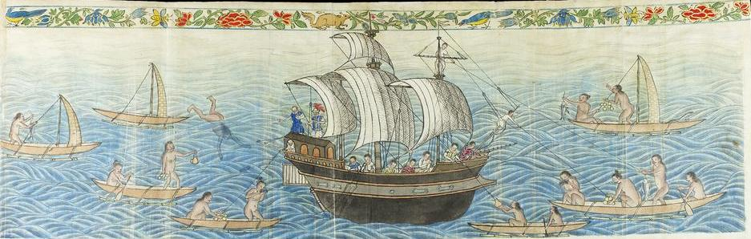
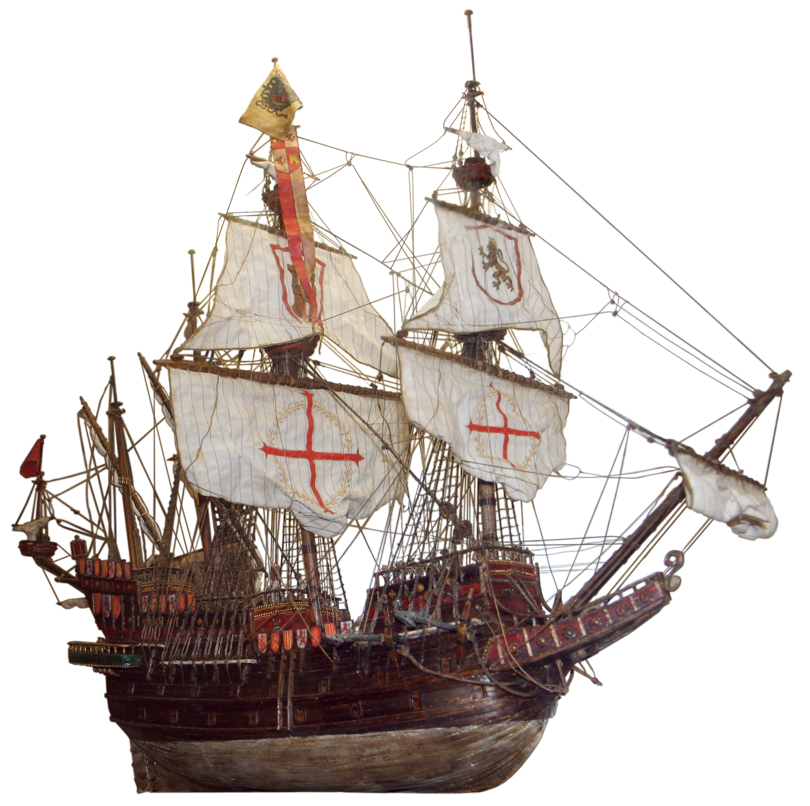
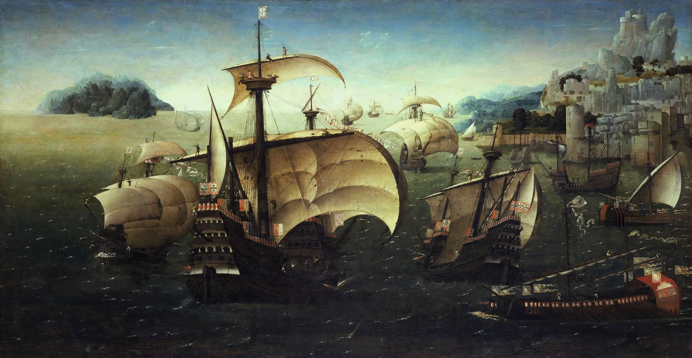

登记、征税、船队组织、欧洲货物输出。
西班牙海上贸易
它不是一条航线，而是大西洋、太平洋和美洲陆路转运拼成的帝国物流系统。
在晚明对应的 16-17 世纪，西班牙的海上贸易以美洲白银为核心，依靠船队护航、港口垄断、殖民税收和跨洋转运，把塞维利亚/加的斯、加勒比、墨西哥、秘鲁、马尼拉和中国商品连接起来。
一句话定位
西班牙掌握的是“银矿-船队-殖民港-太平洋大帆船”的跨洲通道；它强在航线制度和白银动员，弱在本土制造、走私控制和对亚洲货源的直接掌控。
空间结构
西班牙贸易网络可以拆成三段。
Atlantic
白银、胭脂红、糖、烟草、皮革与亚洲货物转运。
Overland
美洲白银换取中国丝绸、瓷器和亚洲商品。
大西洋：护航船队制度
西班牙在 16 世纪中后期形成西印度船队制度，从塞维利亚出发，经加那利群岛横渡大西洋，分别前往新西班牙和 Tierra Firme 区域，再在哈瓦那集结返航。
来源：Spanish treasure fleet；Casa de Contratación。
太平洋：马尼拉大帆船
1565 年后，马尼拉-阿卡普尔科航线成为长期跨太平洋航线。阿卡普尔科带来白银，马尼拉装载中国和亚洲商品，通常每年一至两次往返。
来源：Manila galleon；Flynn & Giraldez 1995。
美洲陆路：两洋之间的接缝
亚洲货物到阿卡普尔科后，经墨西哥城转运到韦拉克鲁斯，再装上大西洋船队。秘鲁白银则经利马/卡亚俄、巴拿马地峡和波托韦洛进入加勒比。
来源：Spanish treasure fleet；Manila galleon。
船只与船队
“马尼拉大帆船”首先是一条贸易制度和航线，其次才指服务这条航线的大型远洋船。

马尼拉大帆船 / Manila Galleon
“马尼拉大帆船”既指 1565-1815 年马尼拉与阿卡普尔科之间的跨太平洋贸易航线，也指跑这条航线的大型西班牙贸易船。西班牙语中也称 Nao de China 或 Galeón de Acapulco。
它不是严格单一型号，而是一类为了超长距离、高价值货物和少班次贸易而建造的大型远洋武装商船。因航程长、利润高、补给需求大，马尼拉航线倾向使用尽可能大的船，部分船只在菲律宾船厂建造，使用菲律宾硬木，并在 Cavite 等地修造、装配。
来源：Manila galleon 条目；galleon 条目。判断：把它理解为“航线制度 + 大型武装商船类别”，比理解成单一标准船型更准确。

西班牙大帆船 / Galleon
16 世纪发展出的多桅、多层甲板远洋帆船，兼具载货和武装能力。它通常比早期 carrack 更长、更低、更窄，风阻更低，稳定性和操控性更好，是西班牙海上帝国的重要船型。
来源：Galleon 条目；Spanish treasure fleet 条目。

克拉克船 / Carrack / Nao
Carrack 是 15-16 世纪葡萄牙和西班牙常用的大型远洋商船，适合长航程和大货量，后来逐渐被 galleon 取代。Nao 在伊比利亚语境中常泛指大型远洋船，容易和具体船型混用。
来源：Carrack 条目；Manila galleon 中 Nao de China 的称呼。

西印度船队 / Flota
大西洋方向的“西班牙宝船队”不是某一种船，而是护航船队制度。每年或定期由多艘商船、武装商船和护航舰组成，前往韦拉克鲁斯、卡塔赫纳、波托韦洛等港口，再在哈瓦那集结返航。
来源：Spanish treasure fleet 条目。
中等操控模式
玩家控制船舵和帆角，帆面积暂时固定。
“收帆 / 放帆”在这里指调整帆角
收帆是把帆拉近船的中线，适合迎风斜驶；放帆是让帆向外打开，适合横风和顺风。它不是缩小或扩大帆面积，帆面积可以以后作为强风、暴风和船只升级系统再加入。
收帆
放帆
帆角越接近最佳值，船越快
玩家看风向箭头和帆的状态来判断是否调对。帆太紧或太松时，帆面抖动、速度下降；帆角合适时，帆鼓起，船获得稳定推进力。
推荐 UI：风向箭头 + 帆角滑条 + 当前航速。滑条文字用“收帆 / 放帆”，内部变量用 sailAngle。
| 船头与来风夹角 | 航行状态 | 玩家操作 | 游戏效果 |
|---|---|---|---|
| 0-35 度 | 顶风禁航区 | 转向，离开正顶风 | 推进力接近 0，帆会乱摆，船逐渐失速。 |
| 35-60 度 | 迎风斜驶 | 明显收帆 | 可以逆风推进，但速度不高；适合抢风航行。 |
| 60-120 度 | 横风 / 斜横风 | 帆角中等打开 | 效率最高，适合让玩家感到“找到风了”。 |
| 120-170 度 | 顺风斜驶 | 继续放帆 | 推进稳定，操作容易，但未必比横风更快。 |
| 170-180 度 | 正顺风 | 大幅放帆 | 直观、稳定，适合新手；高阶玩法可让它略低于横风效率。 |
推进力由风向效率和帆角匹配共同决定
如果船头与来风夹角小于 35 度，推进力为 0；否则用风速、风向效率和帆角匹配度相乘。帆角不合适时不要直接惩罚玩家失败，而是用抖帆和加速变慢提示他调整。
目标在上风时，玩家需要之字形前进
船不能直冲逆风目标。玩家需要在来风左右两侧反复切换航向，每次保持 35-50 度左右的迎风角，通过更长路线逐渐接近上风方向。
空间与航道变化
16-17 世纪的变化，是西班牙贸易从大西洋殖民物流扩展成跨太平洋全球链条。
塞维利亚成为制度中心
Casa de Contratación 负责登记、征税、飞行员训练、海图和贸易管理。贸易名义上高度集中，但实际走私和外国商人借名参与一直存在。
船队制度成型
面对法国、英国、荷兰私掠和海盗威胁，西班牙把跨大西洋航运组织成护航船队，空间上形成“西班牙-加勒比-墨西哥/巴拿马-哈瓦那-西班牙”的闭环。
太平洋回航路线与马尼拉打开
Urdaneta 的返航路线让菲律宾到墨西哥的回程稳定化；1571 年马尼拉建立后，西班牙获得连接中国商品和美洲白银的太平洋节点。
官方限制与走私并存
西班牙王室限制马尼拉大帆船数量，试图保护塞维利亚贸易垄断。但高利润使低报货值、夹带、地方私利和跨国商人参与持续存在。
竞争压力上升
荷兰、英国和法国势力在加勒比、印度洋和东南亚扩张；西班牙仍控制银流主干，但航线安全、财政能力和贸易垄断都受到挑战。
可游戏化航线卡
西班牙网络适合被设计成高价值、低频率、高风险的远洋线路。
马尼拉 - 阿卡普尔科
美洲白银向西，亚洲商品向东。周期长、风险高、收益大。
- 核心变量
- 季风、台风、船况、货舱容量、白银价格、殖民税费。
- 关键港口
- 马尼拉、Cavite、阿卡普尔科。
阿卡普尔科 - 墨西哥城 - 韦拉克鲁斯
不是海路，但决定亚洲货物能否进入大西洋世界。
- 核心变量
- 骡队、关税、盗匪、仓储、殖民官僚订单。
- 关键港口
- 阿卡普尔科、墨西哥城、韦拉克鲁斯。
塞维利亚/加的斯 - 韦拉克鲁斯 - 哈瓦那
新西班牙船队承接欧洲货物、美洲白银和从太平洋转来的中国货。
- 核心变量
- 护航船队、私掠、飓风、王室征税、港口等待。
- 关键港口
- 塞维利亚、加的斯、韦拉克鲁斯、哈瓦那。
秘鲁/波托西 - 巴拿马 - 波托韦洛
南美白银经太平洋、陆路和加勒比港口进入大西洋船队。
- 核心变量
- 矿山产量、强制劳役、地峡运输、仓储和船队时刻。
- 关键港口
- 卡亚俄、巴拿马、波托韦洛、卡塔赫纳。
对晚明游戏的意义
西班牙网络不是直接统治中国海贸，而是向亚洲提供了巨量支付能力。马尼拉让中国商人能把货物卖给掌握美洲白银的西班牙殖民体系。对玩家来说，西班牙可以是“白银来源”和“远洋订单方”，但货源、船员、中介和本地贸易仍高度依赖中国、菲律宾和东南亚社群。
判断依据：马尼拉大帆船以美洲白银购买中国货物；福建商人供应马尼拉贸易；西班牙船队制度连接阿卡普尔科、韦拉克鲁斯和欧洲市场。
本页参考资料
- Manila galleon：用于马尼拉-阿卡普尔科航线、Urdaneta 返航路线、中国货物和美洲白银。
- Spanish treasure fleet：用于西印度船队、韦拉克鲁斯、卡塔赫纳、波托韦洛、哈瓦那和返航体系。
- Casa de Contratación：用于塞维利亚贸易管理、登记、税收、飞行员和海图制度。
- Wikimedia Commons 图片：Reception of the Manila Galleon by the Chamorro in the Ladrones Islands；Galleon-spanish.jpg；Portuguese Carracks off a Rocky Coast；16th century Portuguese Spanish trade routes。
- Dennis O. Flynn and Arturo Giraldez, “Born with a ‘Silver Spoon’: The Origin of World Trade in 1571,” Journal of World History, 1995。用于理解马尼拉和全球白银贸易。